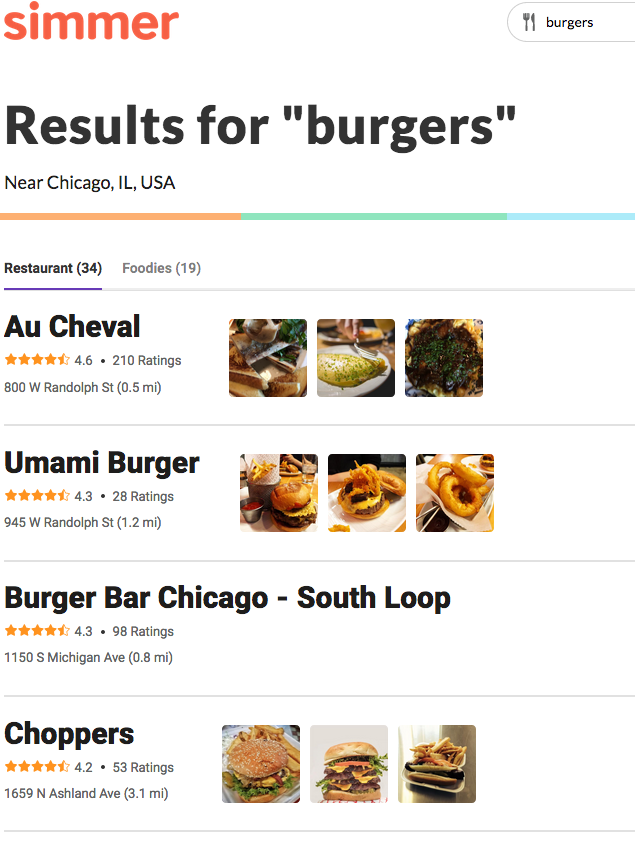
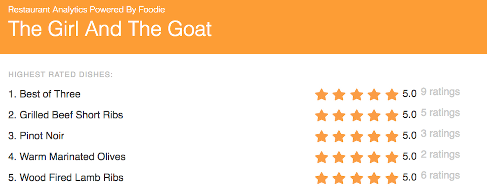

The Idea
|
The idea behind Foodie was simple: allow users to create and discover reviews that were specifically about dishes at any given restaurant. But in order to get started, we needed to bootstrap the platform to have lots of discoverable content and genuinely useful recommendations. To do this, we turned to the multitude of online review platforms who don't use their data effectively. On a website like Yelp, it's pretty useless if a restaurant has 100+ reviews. Sure, you know it's popular, but there's no way of actually reading and analyzing those reviews on your own. So our goal was to extract, from each review, the dish-level sentiment and display that to the user.
|
The Core
|
I joined Foodie as the first engineer, working specifically on the machine learning pipeline. To build our "sentiment engine," we first collected large amounts of data from multiple online sources. We broke each review down into a sentence, and then used named entity recognition techniques — enhanced by entity lists we scraped from restaurant menus. We then used relatively simple sentiment analysis for each sentence, assigning sentiments to the corresponding dishes for each menu. Most of my work was done to improve our entity recognition, and the efficiency of data storage throughout the pipeline. I also built and managed a small team of external contractors to help us label data.
|
 |
Restaurant Analytics
|  |
Understanding the potential usefulness of our data to both restaurants and customers, I built a new product that helped restaurants identify what their "hit" and "miss" dishes were. This analytics system was built as a layer on top of our existing sentiment pipeline, and packaged as an easy-to-digest product for restaurants.
|